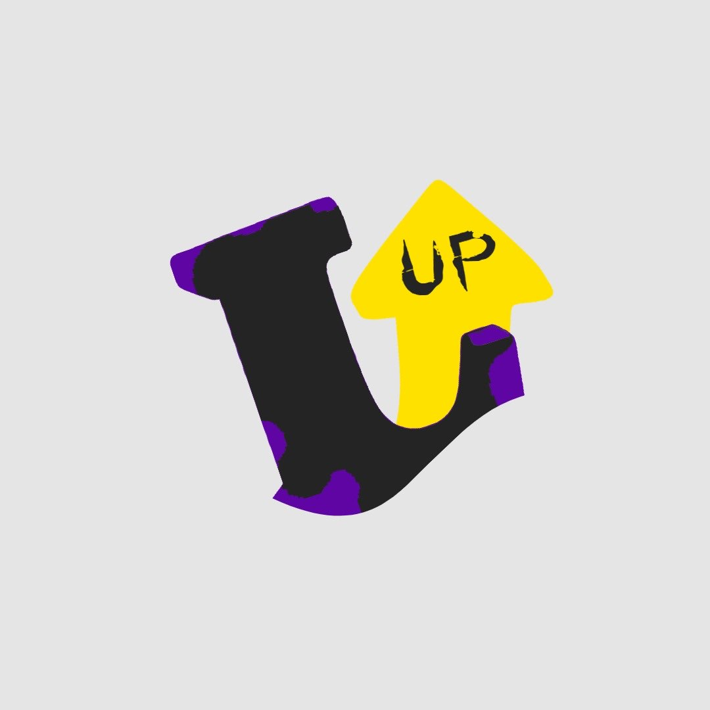
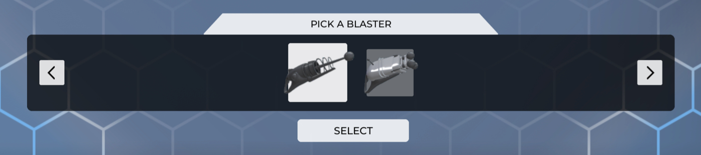
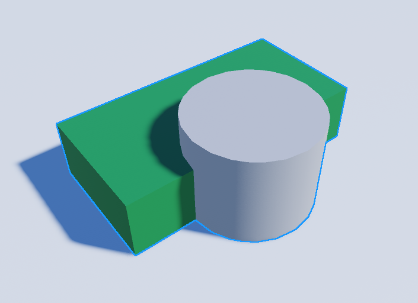

Raciocínio que faz sentido
Dividir desafios em etapas, testar soluções e entender por que algo funciona.

PROJECTLEVEL UP↗Quero fazer parte ↗O PRÓXIMO NÍVEL COMEÇA AQUI
Transforme o interesse do seu filho por Roblox em criatividade, lógica e novas possibilidades. Aprenda a criar jogos de verdade no Roblox Studio.
Quero conhecer o curso ↗01 / MAIS DO QUE JOGAR
No Roblox Studio, a tela vira espaço para experimentar ideias. Seu filho aprende como cenários, personagens, interfaces e programação se conectam para dar vida a um jogo.
Com aulas presenciais e online toda semana e material completo com videoaulas, o aprendizado continua além da aula. Um caminho para sair do “como isso funciona?” e chegar ao “olha o que eu consegui fazer!”.
Aulas todas as semanas, nas duas modalidades.
Conteúdo de apoio para revisar e continuar aprendendo.
Dividir desafios em etapas, testar soluções e entender por que algo funciona.
Explorar a criatividade construindo mundos, experiências e histórias próprias.
Aprender com os erros e desenvolver autonomia a cada nova criação.
02 / CINCO FORMAS DE CRIAR
Nem todo criador começa pelo código.
Descubra o que desperta a curiosidade
do seu filho dentro do Roblox Studio.

Dar vida às ideias com lógica e Luau, a linguagem usada no Roblox. Criar regras, desafios e interações.
LÓGICA + CÓDIGO
Criar menus, botões e telas que ajudam o jogador a entender e aproveitar cada experiência.
INTERFACES + DESIGN
Construir mapas e cenários. Explorar espaço, iluminação e composição para criar mundos marcantes.
CENÁRIOS + CONSTRUÇÃO
Explorar formas, volumes e composição de objetos tridimensionais dentro do Roblox Studio.
FORMAS + DIMENSÃO
Dar movimento a personagens e objetos. Trabalhar poses, tempo e expressão no editor de animações.
MOVIMENTO + EXPRESSÃOExemplos ilustrativos do Roblox Creator Hub · Roblox Creator Documentation · CC BY 4.0. Cenário com recorte de enquadramento. Não são projetos de alunos.
Uma base para experimentar, descobrir interesses e começar a construir projetos próprios. Qual será o primeiro passo? ↗
No mercado de desenvolvimento de jogos, programadores, designers de interfaces, builders, modeladores 3D e animadores colaboram para criar experiências. Explorar essas áreas desde cedo ajuda a descobrir interesses e construir uma base para estudos e projetos futuros.
O curso é uma formação inicial. Carreira e renda dependem de estudo, prática, experiência e oportunidades; não há promessa de emprego ou ganhos.
Explore as áreas de criação no Roblox Creator Hub ↗04 / SUA PRÓXIMA FASE
Conte um pouco sobre quem vai aprender. Depois, continue a conversa pelo WhatsApp para conhecer os detalhes do curso e da inscrição.
A mensagem com suas respostas já estará preparada. Toque em enviar no WhatsApp para iniciar a conversa.